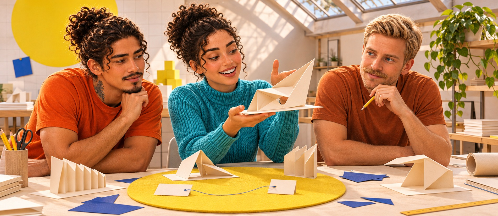
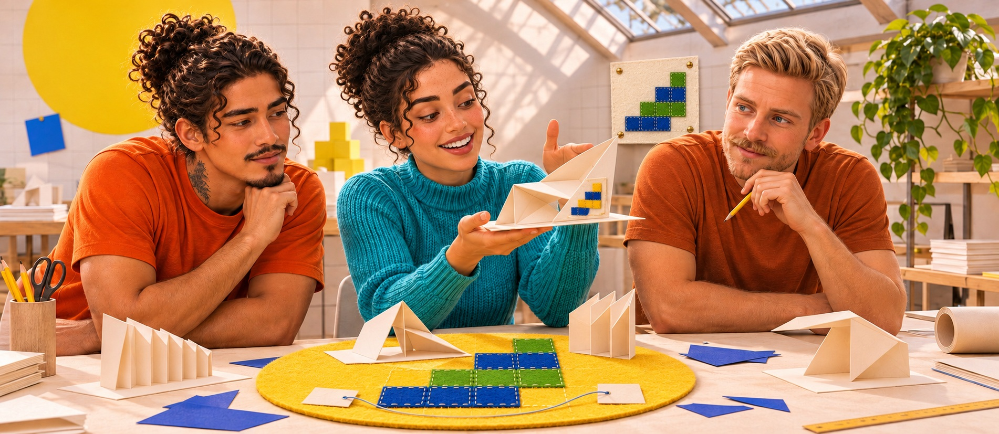
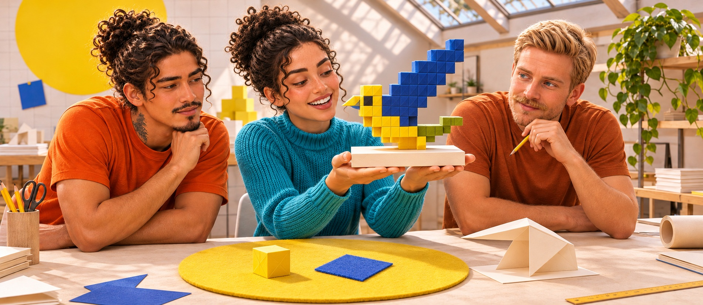
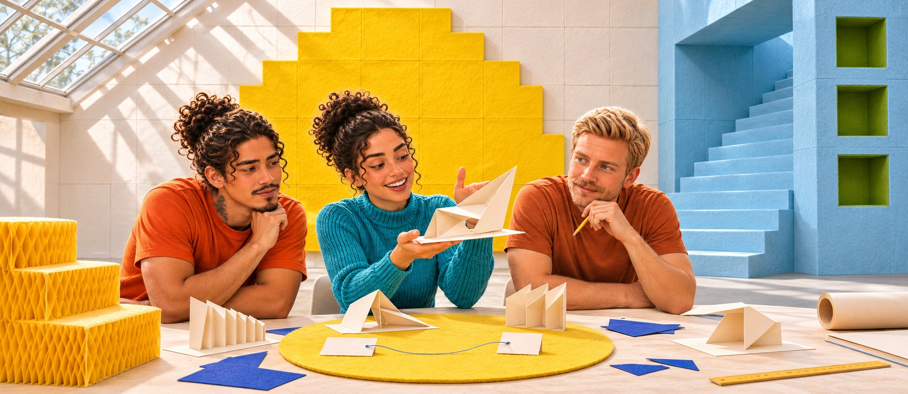

Pixels you canpick up. One sunlit worktable, four ways to use a square. Stitch it into felt, fold it into a bird, build a set around it, or feed the pattern into a 1960s-style paper plotter.
Download the four studies Compare the worktable treatments Original Felt stitches Paper bird Stepped set Retrofuturist studio

The folded model The lighting reference. Soft skylight picks out paper edges, loose curls and the texture of the felt mat.
Download JPG 
Stitch the surface A few stitched squares turn one wing into a repeatable patch. The quietest treatment keeps the original fold and framing.
Download JPG 
Build the object A blue wing rises one paper cube at a time. From across the room it reads as a bird. Up close, you can see how it was folded.
Download JPG 
Build the room The same square becomes a piece of scenery. A stepped sun and blue alcove give the workshop a silhouette of its own.
Download JPG Tomorrow’s workshop The plotter prints a bird one square at a time. Its four coloured keys, paper feed and glowing lamp give the team something to operate together.
Download JPG Paper pixel icons. The reply, waveform and bird now sit in a 24-icon set cut from the same square grid.
Explore the icon library